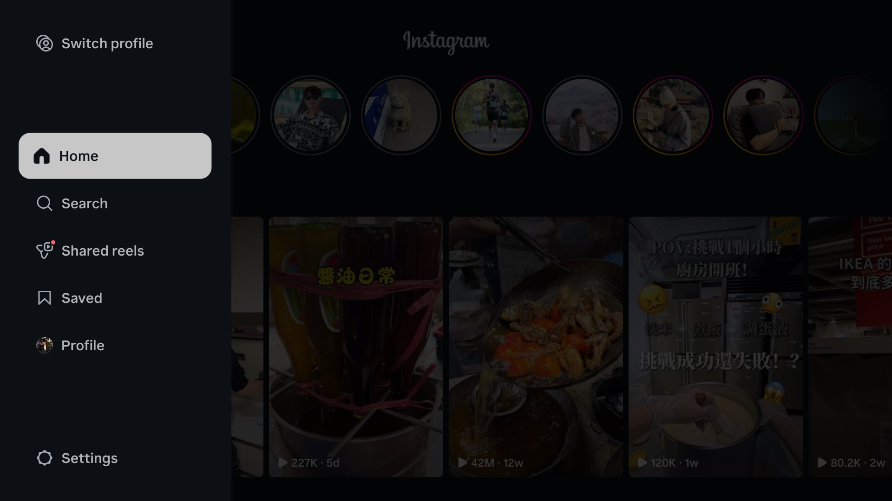
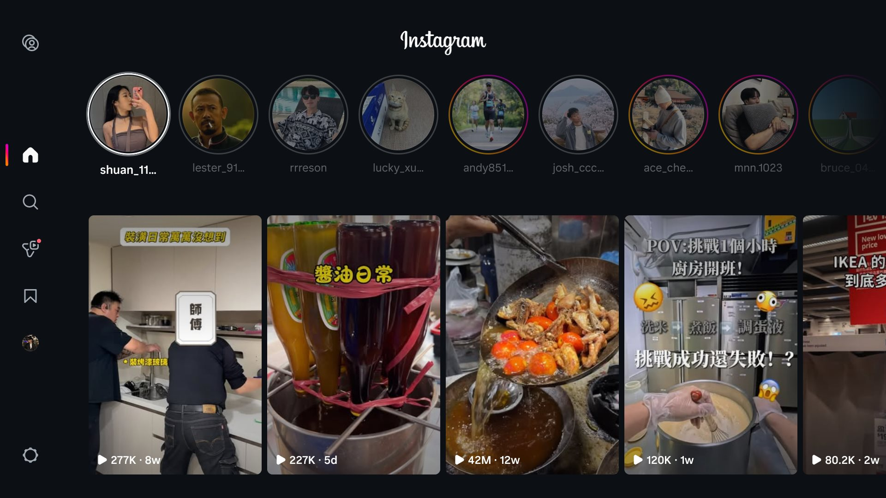
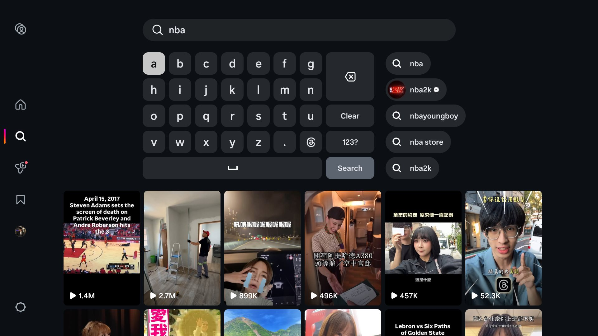
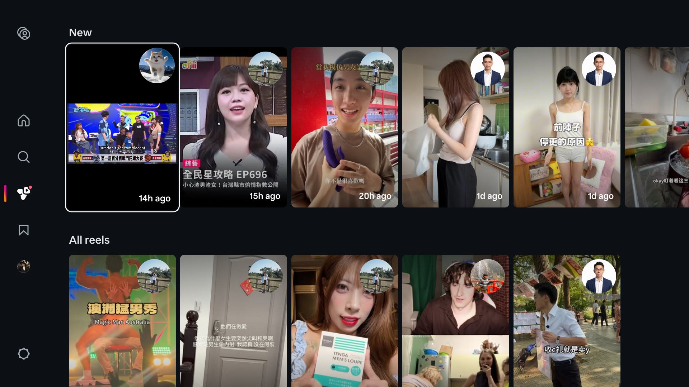
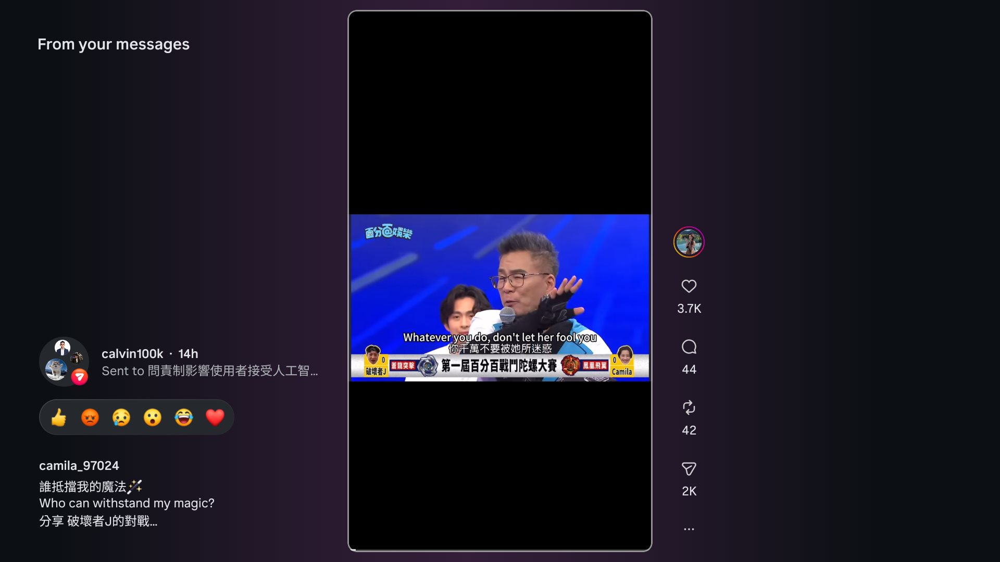
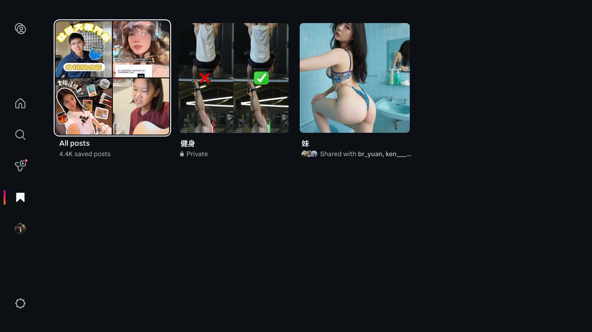
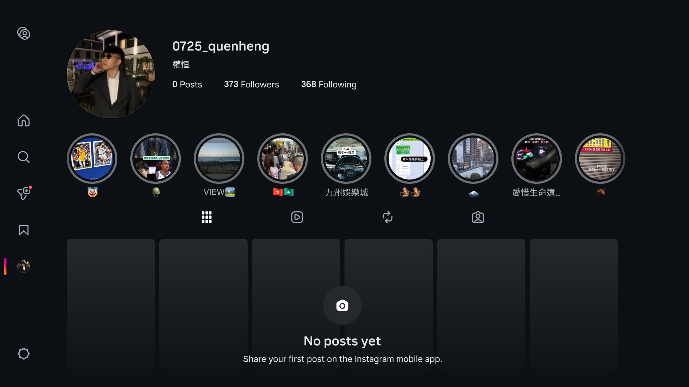
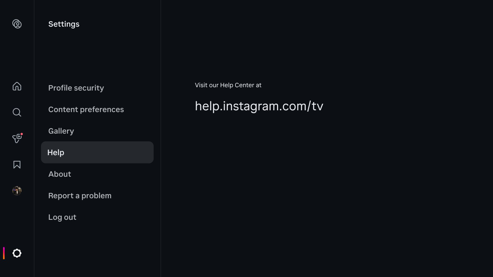

Instagram 官方電視版功能全導覽——最驚喜的是「私訊 Reels 收件匣」
側載成功之後,這篇沿著左側選單把 App 一頁一頁打開看:Home、Search、Shared reels、Saved、Profile、Settings——其中 Shared reels 把朋友私訊傳來的影片全部集中在一個牆上,一次看完,不用再一間一間聊天室點。
上一篇講了怎麼在台灣把「僅限美國」的官方 Instagram 電視版(com.instagram.airwave)側載到 Chromecast 上、用 QR code 完成登入。這篇來回答下一個問題:裝好之後,到底能做什麼?
整個 App 的動線都掛在左側的導覽列上——按遙控器的左鍵就會展開。就沿著它,由上往下走一遍。

Home:限時動態 + For you 影片牆
首頁最上面是熟悉的限時動態列,下面是「For you」的 Reels 格狀牆,縮圖上直接標了觀看數和發布時間。點進任何一格就是全螢幕直式播放器,右側一排是讚、留言、轉發、分享的數字——版面跟手機版的邏輯一致,只是為了電視放大、改成用方向鍵移動。

Search:電視上打字沒有想像中痛苦
搜尋頁是一個螢幕鍵盤,下面鋪推薦影片;一開始打字,右側就即時跳出建議——帳號結果會直接帶頭像和藍勾勾。鍵盤上除了字母數字,還有一顆 Threads 符號鍵——Meta 的全家桶暗示得很明顯。用方向鍵一顆一顆點字母當然不如手機快,但配合即時建議和推薦牆,找特定創作者還算堪用。

主角登場:Shared reels——私訊影片的專屬收件匣
這是整個 App 我最喜歡的分頁,也是手機版沒有的體驗。朋友透過私訊傳給你的所有 Reels,全部集中在這一頁:上面一排「New」是還沒看的(縮圖右上角掛著傳送者的頭像、標著幾小時前),下面「All reels」是完整歷史。
想想手機上的情境:五個朋友各傳了三部影片給你,你得點開五個聊天室、在對話串裡一部一部找。在電視上,它們變成一面牆,拿著遙控器從左往右看過去就好。導覽列上的紅點還會提醒你有新片沒看。

點進去播放時,左上角寫著「From your messages」,下面清楚標示誰傳的、多久以前、附了什麼訊息,再往下是一排表情快速回覆(👍😡😢😮😂❤️)——直接按一顆,對方的聊天室就會收到你的反應。看完、回完,全程不用離開播放器,也不用碰手機。

Saved:珍藏分類都同步過來了
Saved 分頁就是手機上的「我的珍藏」:全部儲存的貼文、自訂分類(私人分類會標鎖頭)、甚至多人協作的共同珍藏都在,跟誰共用也寫得清清楚楚。睡前在手機上收藏、週末在電視上配飯看,這個動線意外地順。

Profile 與 Settings:看得到,但改不了太多
Profile 顯示大頭貼、追蹤數字和限時動態精選,但貼文區寫著「No posts yet — Share your first post on the Instagram mobile app」——電視版是純觀看端,不能發文。Settings 則有帳號安全、內容偏好、Gallery、說明(help.instagram.com/tv)、回報問題和登出;導覽列最上面的 Switch profile 可以多帳號切換,適合全家共用一台電視。


少了什麼?
沒有通知中心、沒有完整的私訊聊天室(文字對話進不去,私訊「裡的影片」才會出現在 Shared reels)、不能發文也不能限動。Meta 的取捨很清楚:電視版就是純 lean-back 的消費端,所有「生產」行為都留在手機上。
有趣的是,唯一被搬上電視的社交功能——私訊 Reels——反而做得比手機更好用。集中收件匣 + 表情快速回覆,把「朋友傳片給你」這件事變成了一種可以靠在沙發上進行的儀式。
本文為個人使用心得,截圖僅供功能說明。與 Instagram 或 Meta 無關;「Instagram」為 Meta Platforms, Inc. 之商標。台灣使用者目前需自行側載,方法見上一篇。
Inside Instagram's Official TV App — the Surprise Hit Is the DM-Reels Inbox
Now that it's sideloaded, let's walk the left-hand nav tab by tab: Home, Search, Shared reels, Saved, Profile, Settings — and the one feature phones don't have: every reel your friends DM you, collected on a single wall you can binge at once.
Last time I covered sideloading the "US-only" official Instagram TV app (com.instagram.airwave) onto a Chromecast in Taiwan and logging in with the QR flow. This post answers the next question: once it's installed, what can it actually do?
Everything hangs off the left navigation rail — press Left on the remote and it slides out. Let's walk it top to bottom.
Home: stories plus a For-you wall
The home screen keeps the familiar stories row up top, with a "For you" grid of reels below — view counts and age printed right on the thumbnails. Any tile opens the full-screen vertical player, with likes, comments, reposts, and shares stacked on the right. Same logic as the phone app, scaled for a TV and driven by the D-pad.
Search: typing on a TV, less painful than expected
Search is an on-screen keyboard with a wall of suggested reels underneath, and as soon as you start typing, live suggestions appear on the right — account results come with avatars and verification badges. There's even a dedicated Threads-symbol key on the keyboard — Meta bundling at its most subtle. Pecking letters with a D-pad will never beat a phone, but live suggestions make finding a specific creator workable.
The star: Shared reels — an inbox for DM'd videos
This is my favorite tab in the app, and an experience the phone doesn't offer. Every reel your friends send you in DMs lands on this one page: a "New" row of unwatched ones (each thumbnail badged with the sender's avatar and how long ago it arrived), and an "All reels" section with the full history.
Think about the phone version of this: five friends each send you three reels, and you open five chat threads and dig through each conversation. On the TV they become one wall you scan left to right from the couch. The red badge on the rail tells you when something new arrived.
Open one and the player is labeled "From your messages", showing who sent it, when, and the message they attached — plus a quick-reaction bar (👍😡😢😮😂❤️) that posts straight back into that chat. Watch, react, done — without leaving the player or touching your phone.
Saved: your collections came along
Saved is your bookmarks from the phone, intact: all saved posts, custom collections (private ones marked with a lock), even collaborative collections shared with friends, with the collaborators listed. Save on the phone at midnight, watch on the TV over lunch — a surprisingly natural loop.
Profile and Settings: visible, mostly read-only
Profile shows your avatar, follower counts, and story highlights, but the post grid says "No posts yet — share your first post on the Instagram mobile app" — the TV app is strictly a viewer; you can't post. Settings covers profile security, content preferences, Gallery, help (help.instagram.com/tv), reporting a problem, and logging out. Switch profile at the top of the rail handles multiple accounts — handy for a shared living-room TV.
What's missing?
No notifications, no full DM threads (text conversations aren't reachable — only the reels inside DMs surface in Shared reels), no posting, no stories creation. Meta's trade-off is clear: the TV app is a pure lean-back consumption device, and everything "productive" stays on the phone.
The irony is that the one social feature they did port — DM'd reels — works better on the TV than on the phone. A unified inbox plus one-press reactions turns "my friends send me videos" into a couch ritual.
Personal review; screenshots shown for illustration only. Not affiliated with Instagram or Meta. "Instagram" is a trademark of Meta Platforms, Inc. Outside the US the app currently requires sideloading — see the previous post.